5.10.6. GDC 使用说明
5.10.6.1. 模块描述
模式支持的输入图像尺寸参考值为3840*2160，2688*1944，1920*1080，1280*720，640*480，480*320。
note 1: xj3 ecc mode 统一填写ecc is disable, XJ3不支持该功能。
note2:当参数为小数时，保证精度为浮点运算以后8位小数及以上，否则可能生成的bin不一致。
node3:用户填充数据结构或者json时填充的信息应该包含各种模式示例所有项。
5.10.6.2. 软件接口
hb_vio_gen_gdc_cfg/ hb_vio_free_gdc_cfg
【函数声明】
int hb_vio_gen_gdc_cfg(param_t*gdc_param, window_t *windows, uint32_t wnd_num, void **cfg_buf, uint64_t *cfg_size)；
void hb_vio_free_gdc_cfg(uint32_t * cfg_buf);
【功能描述】
设置/获取。
【参数描述】
| 参数名称 | 描述 | 输入/输出 |
|---|---|---|
| param_t *gdc_param | 图像基本信息 | |
| window_t *windows | 图像处理参数信息 | |
| uint32_t wnd_num | 图像处理信息数量，若有1个window则填写1。 | |
| void **cfg_buf | 生成的bin buffer,buffer 由函数内部分配，使用完成后需要释放。 | |
| uint64_t *cfg_siz | 生成bin buffer 长度。 |
【返回值】
| 返回值 | 描述 |
|---|---|
| 0 | 成功 |
| 非0 | 失败 |
【注意事项】
1. 生成gdc-bin buf 使用结束后需要释放，否则会造成内存泄漏。
2. 不同模式下cfg.bin 生成需要填充的结构见各模式示例。
【参考代码】
hb_vio_set_gdc_cfg
【函数声明】
int hb_vio_set_gdc_cfg(uint32_t pipeline_id, uint32_t* cfg_buf, uint64_t cfg_size)
【功能描述】
设置/获取。
【参数描述】
| 参数名称 | 描述 | 输入/输出 |
|---|---|---|
| uint32_t pipeline_id | pipe_line 号 | |
| uint32_t* cfg_buf | gdc-bin buf | |
| uint64_t cfg_size | gdc-bin buf 长度 |
【返回值】
| 返回值 | 描述 |
|---|---|
| 0 | 成功 |
| 非0 | 失败 |
【注意事项】
调用顺序，调用hb_vio_gen_gdc_cfg生成gdc_bin_cfg文件，调用hb_vio_set_gdc_cfg设置gdc_bin于某个pipeline,接着调用hb_vio_free_gdc_cfg释放gdc_bin的buffer。
【参考代码】
5.10.6.3. 数据结构
frame_format_t
【结构定义】
typedef enum {
FMT_UNKNOWN,
FMT_LUMINANCE,
FMT_PLANAR_444,
FMT_PLANAR_420,
FMT_SEMIPLANAR_420
} frame_format_t;
【功能描述】
【成员说明】
| 成员 | 含义 |
|---|---|
| FMT_UNKNOWN | |
| FMT_LUMINANCE | |
| FMT_PLANAR_444 | |
| FMT_PLANAR_420 | |
| FMT_SEMIPLANAR_420 | nv12 使用该项 |
note 4: XJ3中使用FMT_SEMIPLANAR_420类型，若图像类型使用不当会造成输出异常。
resolution_t
【结构定义】
typedef struct {
uint32_t w;
uint32_t h;
} resolution_t;
【功能描述】
【成员说明】
| 成员 | 含义 |
|---|---|
| uint32_t w | width in pixels |
| uint32_t h | height in pixels |
param_t
【结构定义】
typedef struct {
frame_format_t format;
resolution_t in;
resolution_t out;
int32_t x_offset;
int32_t y_offset;
int32_t diameter;
double fov;
} param_t;
【功能描述】
【成员说明】
| 成员 | 含义 |
|---|---|
| frame_format_t format | 处理图像格式 |
| resolution_t in | 实际输入图像尺寸 |
| resolution_t out | 实际输出图像尺寸 |
| int32_t x_offset | 输入区域沿X轴偏移的像素数。 建议：default 0 |
| int32_t y_offset | 输入区域沿Y轴偏移的像素数。 建议：default 0 |
| int32_t diameter | 定义矩形输入图像上包含实际鱼眼照片的输入圆形区域的像素直径。对于某些相机，此圆形图像区域的直径可以大于或小于矩形画布的尺寸（有时可能会被剪裁）。 |
| double fov | 视场定义输入图像的可视角度，影响源网格的曲率。视场越大，透视变形越大。 |
note 5: 一般情况下diameter应保持与input.height一致。
rect_t
【结构定义】
typedef struct {
int32_t x;
int32_t y;
int32_t w;
int32_t h;
} rect_t;
【功能描述】
【成员说明】
| 成员 | 含义 |
|---|---|
| int32_t x | Start x coordinate |
| int32_t y | Start y coordinate |
| int32_t w | width |
| int32_t h | height |
point_t
【结构定义】
typedef struct {
double x;
double y;
} point_t;
【功能描述】
【成员说明】
| 成员 | 含义 |
|---|---|
| double x | x coordinate |
| double y | y coordinate |
transformation_t
【结构定义】
typedef enum {
PANORAMIC,
CYLINDRICAL,
STEREOGRAPHIC,
UNIVERSAL,
CUSTOM,
AFFINE,
DEWARP_KEYSTONE
} transformation_t;
【功能描述】
【成员说明】
| 成员 | 含义 |
|---|---|
| PANORAMIC | |
| CYLINDRICAL | |
| STEREOGRAPHIC | |
| UNIVERSAL | |
| CUSTOM | |
| AFFINE | |
| DEWARP_KEYSTONE |
custom_tranformation_t
【结构定义】
typedef struct {
uint8_t full_tile_calc;
uint16_t tile_incr_x;
uint16_t tile_incr_y;
int32_t w;
int32_t h;
double centerx;
double centery;
point_t* points;
} custom_tranformation_t;
【功能描述】
【成员说明】
| 成员 | 含义 |
|---|---|
| uint8_t full_tile_calc | |
| uint16_t tile_incr_x | |
| uint16_t tile_incr_y | |
| int32_t w | 自定义转换网格中水平方向上的数字或点 |
| int32_t h | 自定义转换网格中垂直方向的数字或点 |
| double centerx | center along x axis |
| double centery | center along y axis |
| point_t* points | config.txt转换序列, 数量 = w*h |
window_t
【结构定义】
typedef struct {
rect_t out_r;
transformation_t transform;
rect_t input_roi_r;
int32_t pan;
int32_t tilt;
double zoom;
double strength;
double strengthY;
double angle;
double elevation;
double azimuth;
int32_t keep_ratio;
double FOV_h;
double FOV_w;
double cylindricity_y;
double cylindricity_x;
char custom_file[128];
custom_tranformation_t custom;
double trapezoid_left_angle;
double trapezoid_right_angle;
} window_t;
【功能描述】
【成员说明】
| 成员 | 含义 |
|---|---|
| rect_t out_r | Output window position and size |
| transformation_t transform | Used transformation |
| rect_t input_roi_r | roi 区域 |
| int32_t pan | 沿变换曲面沿水平方向以给定数量的像素偏移变换网格。 |
| int32_t tilt | 沿变换曲面沿垂直方向将变换网格偏移给定数量的像素。 |
| zoom | 按提供的因子缩放转换输出 |
| strength | 沿X轴的变换强度（无量纲非负参数） |
| double strengthY | 沿Y轴的变换强度（无量纲非负参数）。 |
| double angle(rotation) | 区域将在其轴上旋转的角度 |
| double elevation | 指定主投影轴的角度（度） |
| double azimuth | 指定主投影轴的角度，从北向（正向东）顺时针计数 |
| int32_t keep_ratio | 在水平和垂直方向上保持相同的拉伸强度（enable/disable） |
| double FOV_h | 垂直尺寸输出视场的大小（度） |
| double FOV_w | 水平尺寸输出视场的大小（度） |
| double cylindricity_y | 垂直方向目标投影形状的圆柱度水平 |
| double cylindricity_x | 水平方向目标投影形状的圆柱度水平 |
| char custom_file[128] | File name of the file containing custom transformation description |
| custom_tranformation_t custom | Parsed custom transformation structure |
| double trapezoid_left_angle | Left Acute angle in degrees between trapezoid base and leg |
| double trapezoid_right_angle | Right Acute angle in degrees between trapezoid base and leg |
5.10.6.4. 各参数调试效果
pan调试效果
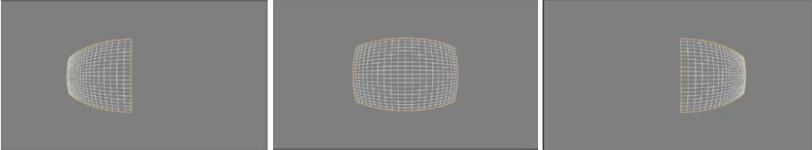
tile调试效果
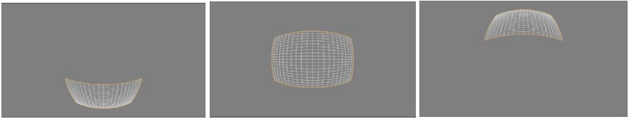
zoom调试效果
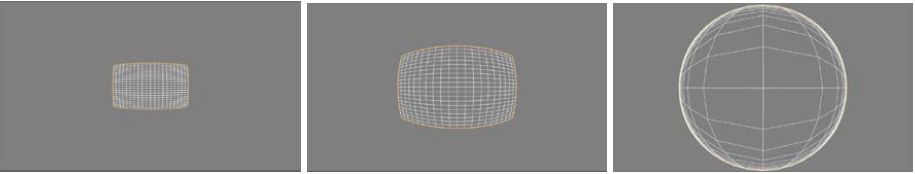
5.10.6.5. 调试说明
若使用gdc-tool离线进行标定，需使用gdc-tool，相关工具在发布包software_tools\isp_tuning_tools目录下。准备jpg模式下图像，load 到gdc-tool中进行离线校正，校正完成后可以直接保存config.bin文件用于硬件校正，也可用保存config.json文件在线生成config.bin进行硬件校正。
启动gdc-tool
1. window环境
安装环境：参考https://www.cnblogs.com/gaosheng-221/p/6799458.html
安装执行依赖：在gdc-tool-gui-0.23.68-windows文件目录下执行npm install express
启动应用：在win 命令行工具内进入文件目录，执行node app.js，Chrome 浏览器登陆http://localhost:3000/。
2. linux 环境
安装环境：apt install nodejs-legacy
安装执行依赖：在gdc-tool-gui-0.23.68-linux文件目录下执行npm install –production
启动应用：执行node app.js，登陆http://localhost:3000/。
affine
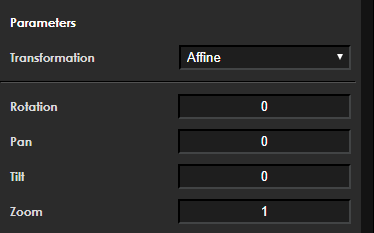
【功能描述】
【必备成员】
| 成员 | 含义 |
|---|---|
| int32_t pan | default 0, 不修改 |
| int32_t tilt | default 0, 不修改 |
| zoom | |
| double angle(rotation) | 0/90/180/270 |
note 6: input size== output size，0°和180°输入输出尺寸保持一致，90°和270°输出尺寸的宽应保持16字节对齐。
equisolid（Panoramic）
此转换提供等实体（全景panoramic）校正，并将结果显示为平面上的投影。
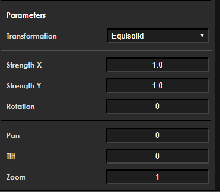
【功能描述】
【成员说明】
| 成员 | 含义 |
|---|---|
| int32_t pan | default 0, 不修改 |
| int32_t tilt | default 0, 不修改 |
| zoom | |
| strength | 沿X轴的变换强度（无量纲非负参数） |
| double strengthY | 沿Y轴的变换强度（无量纲非负参数） |
| double angle(rotation) | 0/90/180/270 |
note 7: input size== output size，0°和180°输入输出尺寸保持一致，90°和270°输出尺寸的宽应保持16字节对齐。
strength x调试效果
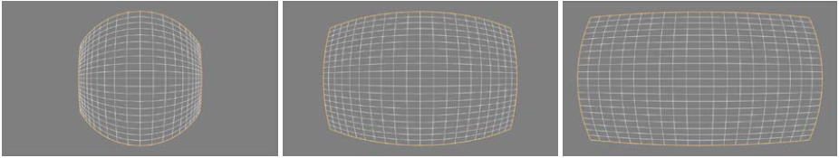
strength y调试效果
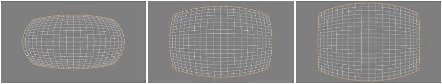
ratation调试效果
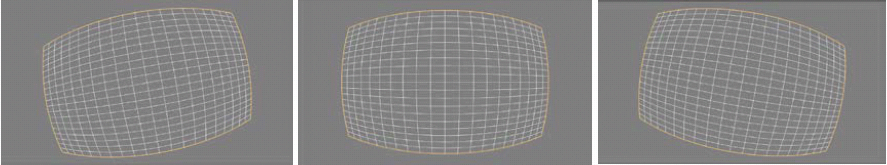
equisold(cylinder)（Stereographic）
此变换为将结果图像投影到柱面全景图的完整鱼眼帧提供等实体校正。
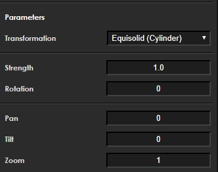
【功能描述】
【成员说明】
| 成员 | 含义 |
|---|---|
| int32_t pan | default 0, 不修改 |
| int32_t tilt | default 0, 不修改 |
| zoom | |
| strength | 转换的强度（无量纲非负参数）转换的强度（无量纲非负参数） |
| double angle(rotation) | 0/90/180/270 |
note 8: input size== output size，0°和180°输入输出尺寸保持一致，90°和270°输出尺寸的宽应保持16字节对齐。
strength 调试效果
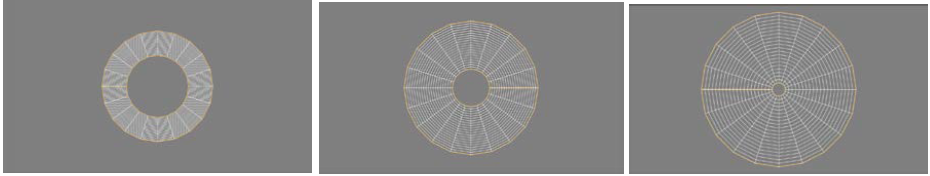
rotation 调试效果
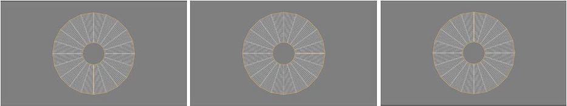
equidistant（Universal）
等距变换包含许多参数，这些参数允许它为投影提供一系列不同的目标平面。这使您可以更自由地选择要变换的鱼眼帧的所需区域。
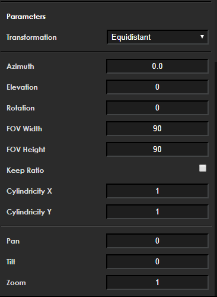
【功能描述】
【成员说明】
| 成员 | 含义 |
|---|---|
| int32_t pan | default 0, 不修改 |
| int32_t tilt | default 0, 不修改 |
| zoom | |
| double angle(rotation) | 0/90/180/270 |
| double elevation | 定义了投影轴的倾斜度 |
| double azimuth | 定义了投影轴的旋转角度。当此参数旋转轴而不是栅格时，如果“仰角”为0，则“方位角”将没有可见效果 |
| int32_t keep_ratio | 当“保持比率”参数打开时，FOV高度参数将被忽略，其值将自动计算，以在水平和垂直方向上保持相同的拉伸强度 |
| double FOV_h | 描述垂直维度中输出视图字段的大小（以度为单位）。有效值的范围是从0到180 |
| double FOV_w | 描述垂直维度中输出视图字段的大小（以度为单位）。有效值的范围是从0到180 |
| double cylindricity_y | 描述目标投影沿Y轴的球面度。此值从0到1，其中1是球形的。如果此值设置为1，而“圆柱度X”值设置为0，则投影将沿Y轴形成圆柱体 |
| double cylindricity_x | 描述目标投影沿X轴的球面度。此值从0到1，其中1是球形的。如果此值设置为1，并且“圆柱度Y”值设置为0，则投影将沿X轴形成圆柱体。 |
note 9: input size== output size，0°和180°输入输出尺寸保持一致，90°和270°输出尺寸的宽应保持16字节对齐。
note10: 正常的视力值大约是90度。对于圆柱度（见下文）等于“0”的变换，视场宽度和高度180的值将导致图像无限拉伸。
note11: 如果cylindricity_x和cylindricity_y圆柱度值都设置为1，则投影将是球形的。如果两者都是0，则变换将是矩形的
elevation 调试效果
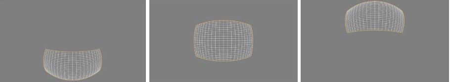
azimuth 调试效果
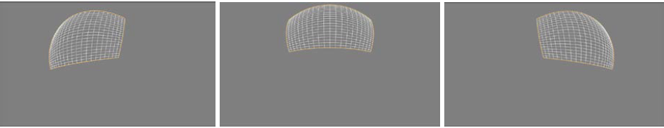
azimuth 调试效果
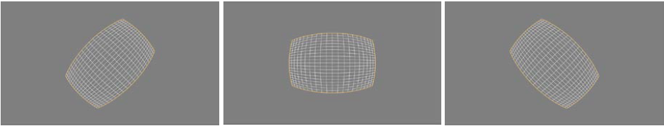
cylindricity x调试效果
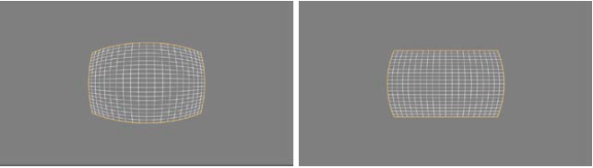
cylindricity x调试效果
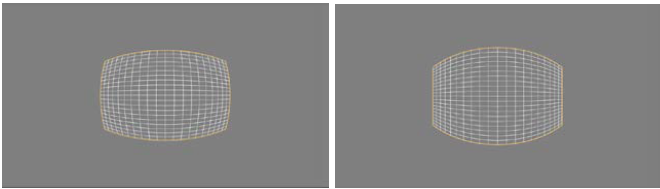
custom
它们用于创建任何提供的转换都无法描述的转换。为了纠正任意失真，必须向GDC工具提供一个特殊的校准文件
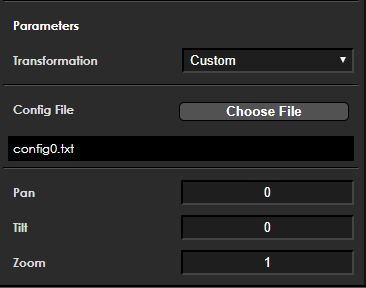
【功能描述】
【成员说明】
| 成员 | 含义 |
|---|---|
| int32_t pan | |
| int32_t tilt | |
| zoom | |
| char custom_file[128] | config.txt文件名称 |
| custom_tranformation_t custom | 解析的自定义转换结构 |
config.txt 解释：
Config file的规则大致需要注意一下几点：
1. 第一行是垂直方向和水平方向标定点的个数， 7指的是垂直方向有7个标定点，28指的是水平方向有28个标定点
2. 第二行3 和 6.5是选中区域的中心点，通常是垂直方向标定点 (Y-1)/2 和水平方向标定点(X-1)/2
eg.下图是我截取的其中的一部分数据图片，第三行到第九行就是标定点在源图的坐标值，格式是Y: X。以上图为例， 一共有7x28个标志点。
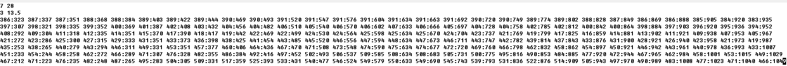
3. 由于标定点必须是等距离的，这意味着输出图片的分辨率取决于标志点的点数。
eg. 输出图片的Width = 1280， Height的计算如下：1280/Height = (28-1)/(7-1), height = 284
keystone+dewarping（Dewarp_keystone）暂无验证
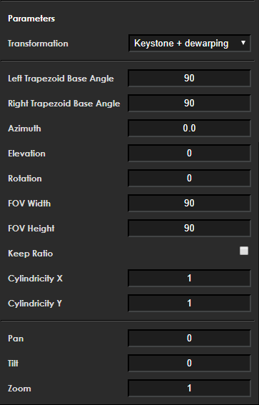
【功能描述】
【成员说明】
| 成员 | 含义 |
|---|---|
| int32_t pan | |
| int32_t tilt | |
| zoom | |
| double angle(rotation) | |
| double elevation | |
| double azimuth | |
| int32_t keep_ratio | |
| double FOV_h | |
| double FOV_w | |
| double cylindricity_y | |
| double cylindricity_x | |
| double trapezoid_left_angle | |
| double trapezoid_right_angle |
5.10.6.6. 示例
以1080p-1080p 为例，说明各种模式下配置的参数。
affine
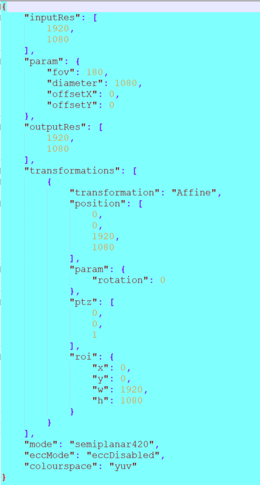
equisolid（Panoramic）
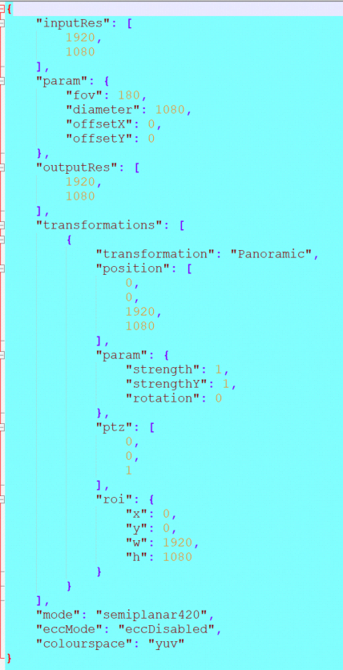
equisolid(cylinder) （Stereographic）
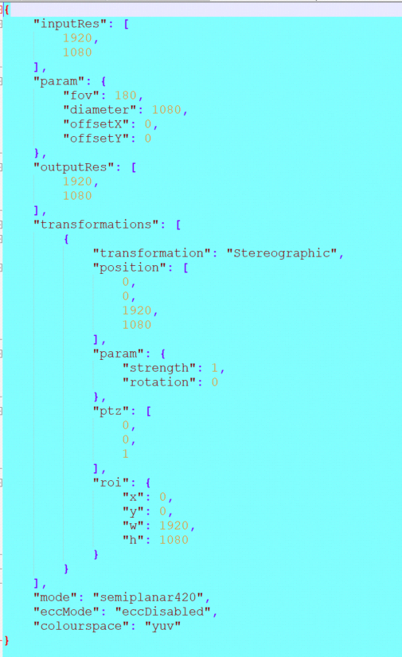
equidistant（Universal）
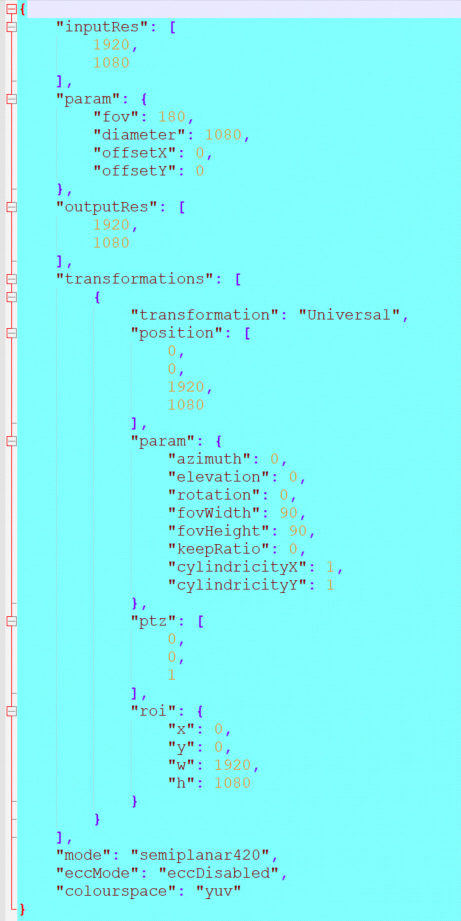